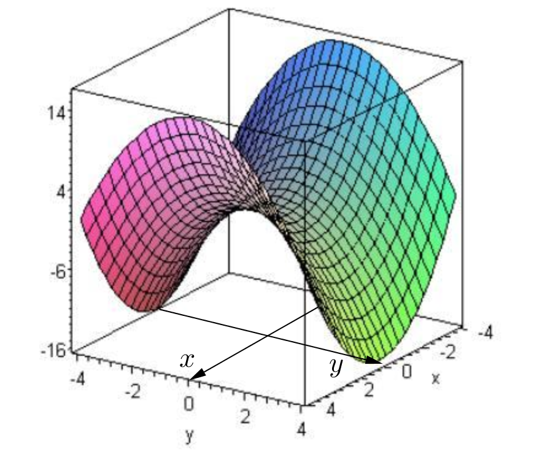

Firstly, let’s recall some of the important things that we know about the derivative of the function of one variable, \(f(x)\text{.}\)
At any given point \(x_0\text{,}\)\(f'(x_0)\) gives the slope of the tangent to the graph of the function at that point. Figure4.1.Plot of \(y=f(x)\) (blue) and the tangent line (red) at \(x=x_0\text{.}\)
At any given point \(x_0\text{,}\)\(f'(x_0)\) gives the instantaneous rate of change of the function at that point.
The derivative \(f'(x)\) is itself a function of one variable, when it exists.
For a function of two variables, \(f(x,y)\text{,}\) the rate at which the function is changing at any point as we vary the independent variables depends upon the direction in which we vary those variables.
Example4.2.
Consider the function \(f(x,y) = x^2-y^2\text{.}\) The graph of this function is shown below. At \((x,y)=(0,0)\text{,}\)\(f=0\text{.}\) As we can see by looking at the graph, as we move away from the origin along the positive \(x\)-axis the value of \(f\) is increasing, i.e. the rate of change of the function will be positive. However, if we move away from the origin along the positive \(y\)-axis the value of \(f\) is decreasing, i.e. the rate of change of the function will be negative.

Figure4.3.3D plot of \(f(x,y)= x^2-y^2\text{.}\)
As a first step to analyzing more formally how a function of two variables can change with respect to its independent variables we will first consider the cases where we vary only one variable at a time.
Example4.4.
Consider the function \(f(x,y) = 5 - \dfrac{x^2+y^2}{2}\) at the point \((2,1)\text{.}\)
Firstly, let’s look at the instantaneous rate of change of \(f\) in the direction of the positive \(x\)-axis. As shown in the diagram below, if we hold \(y\) constant at and vary \(x\) we are actually moving along the curve
Figure4.5.3D plot of \(f(x,y)= 5 - \dfrac{x^2+y^2}{2}\) with a plane constant in \(y\) through the point \((2,1)\text{.}\)
Along this curve \(\dfrac{dz}{dx}=-x\) and at \(x=2\) we have \(\dfrac{dz}{dx}=-2\text{.}\) Thus, the instantaneous rate of change of \(f\) in the direction of the positive \(x\)-axis at the point \((2,1)\) is \(-2\text{.}\)
Now consider the instantaneous rate of change of \(f\) in the direction of the positive \(y\)-axis. As shown in the diagram below, if we hold \(x\) constant at \(x=2\) and vary \(y\) we are actually moving along the curve
Along this curve \(\dfrac{dz}{dy}=-y\) and at \(y=1\) we have \(\dfrac{dz}{dy}=-1\text{.}\) Thus, the instantaneous rate of change of \(f\) in the direction of the positive \(y\)-axis at the point \((2,1)\) is \(-1\text{.}\)
Figure4.6.3D plot of \(f(x,y)= 5 - \dfrac{x^2+y^2}{2}\) with a plane constant in \(x\) through the point \((2,1)\text{.}\)
Consider a function of two variables, for example:
The following plots the graph of \(z=f(x,y)\text{,}\) together with the vertical planes defined by \(y=y_0\) (in orange) and \(x=x_0\) (in red), and arrows representing the slope of the surface inside these planes.
The slopes of the surface inside the planes above are given by what is known as the partial derivatives of the function. Where \(y=y_0\) is kept constant (in the orange plane), the slope is given by the partial derivative \(f_x(x,y)\text{.}\) Where \(x=x_0\) is kept constant (in the red plane), the slope is given by the partial derivative \(f_y(x,y)\text{.}\) Formally, partial derivatives are defined as follows.
Definition4.7.Partial Derivative.
Consider the function of two variables, \(f(x,y)\)
The partial derivative of \(f\) with respect to \(x\) at the point \((x_0,y_0)\) is given by the limit (if it exists)
The notation \(f_x\) is often used to denote \(\dfrac{\partial f}{\partial x}\text{.}\) Similarly, \(f_y\) is often used to denote \(\dfrac{\partial f}{\partial y}\text{.}\)
Example4.9.
Using the definition, calculate the partial derivatives of \(f(x,y) = 5 - \dfrac{x^2+y^2}{2}\) at the point \((2,1)\text{.}\)
If we calculate the partial derivatives of a function at the general point \((x,y)\) (as opposed to some specific point \((x_0,y_0)\)) we will obtain (instead of two specific values) two new functions of two variables.
Example4.10.
Using the definition, calculate the partial derivatives of \(f(x,y) = xy-1\text{.}\)
As can be seen in the above example, to calculate the partial derivative of \(f\) with respect to \(x\) at the general point \((x,y)\) all we have to do is treat \(y\) as a constant and differentiate \(f(x,y)\) with respect to \(x\) (using all of the familiar rules of differentiation for functions of one variable). Similarly, to calculate the partial derivative of \(f\) with respect to \(y\) at the general point \((x,y)\) treat \(x\) as a constant and differentiate \(f(x,y)\) with respect to \(y\text{.}\)
Example4.11.
Find the partial derivatives of the function \(f(x,y) = 5 - \frac{x^2+y^2}{2}\) at the point \((2,1)\) using the above method.
A shorter notation for the partial derivative of \(f\) with respect to \(x\) is \(f_x\text{.}\) Similarly the partial derivative with respect to \(y\) is written as \(f_y\text{.}\)
Example4.12.
Find \(f_x\) and \(f_y\) when \(f(x,y) = x^2y\text{.}\)
Answer.
\(f_x(x,y) = 2xy\) and \(f_y(x,y) = x^2\text{.}\)
Solution.
To find \(f_x (x,y)\text{,}\) think of \(y\) as a constant. Thus,
The equation \(xz + y^2z^3 = 2\) can be thought of as implicitly defining \(z\) as a function of \(x\) and \(y\text{.}\) Find \(z_x\) and \(z_y\text{.}\)
Answer.
\(z_x = \dfrac{-z}{x+3y^2 z^2}\) and \(z_y =\dfrac{-2yz^3}{x+3y^2 z^2}\)
Solution.
To find \(z_x\) differentiate both sides of the defining equation with respect to \(x\text{,}\) remembering that \(z\) is some unknown function of \(x\text{.}\) Also, remember to treat \(y\) as a constant. Then, using the product rule and the chain rule,
Find both partial derivatives of the function \(f(x,y)=4-xy-y^2\) at the point \((3,2)\text{.}\)
2.
Find \(\dfrac{\partial f}{\partial x}\) and \(\dfrac{\partial f}{\partial y}\) when \(f(x,y) = \ln(x^2-4xy^3)\text{.}\)
3.
If \(L(x,y) = \dfrac{e^{xy}}{(1-x)(1-y)}\text{,}\) find \(L_x(2,3)\text{.}\)
4.
Find \(f_x(x,y)\) and \(f_y(x,y)\) when \(f(x,y) = x^y\text{.}\)
5.
In the following contour plot the contours are for evenly spaced values of \(k\) from \(-2\) at the point \(X\) to \(2\) at the point \(Y\text{.}\) Find the sign of \(f_x(x,y)\) and \(f_y(x,y)\) at the points \(A\text{,}\)\(B\) and \(C\) given the following contour plot for the function \(f(x,y)\text{.}\) Explain your thinking.
Figure4.16.
Section4.2Higher Partial Derivatives
The partial derivatives of the function \(z=f(x,y)\) are themselves functions of two variables. Thus they can be differentiated further, giving the second partial derivatives, the third partial derivatives etc. Common notations for the second partial derivatives include:
Now differentiate \(f_x(x,y)\) firstly with respect to \(x\) to find \(f_{xx}(x,y)\) and then with respect to \(y\) to find \(f_{xy}(x,y)\text{.}\) Thus,
Even though \(g\) is a function of \(3\) variables, Clairaut’s Theorem still holds. Thus there will be only 6 distinct second partial derivatives, i.e. \(g_{xx}\text{,}\)\(g_{xy}\text{,}\)\(g_{xz}\text{,}\)\(g_{yy}\text{,}\)\(g_{yz}\text{,}\)\(g_{zz}\text{.}\)
Computer algebra systems can also find partial derivatives. For example, here are some examples of a queries to Wolfram Alpha that will work.
Figure4.22.Figure4.23.
Figure4.24.
Remark4.25.
SageMath can also be used to compute partial derivatives. For example, the following Sage cell computes the partial derivatives of the function \(f(x,y)=x^2(\sin(x+5y))\text{.}\)